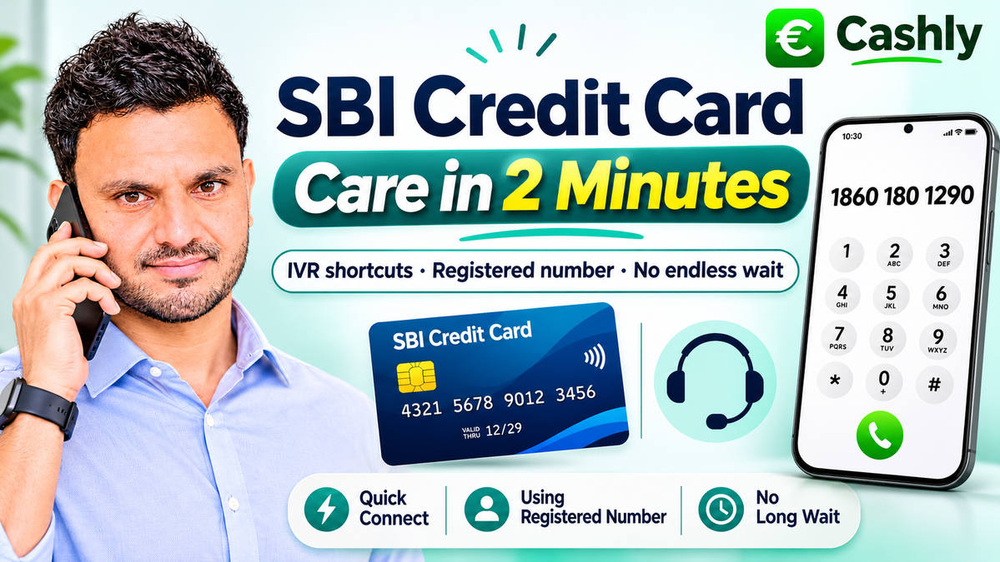
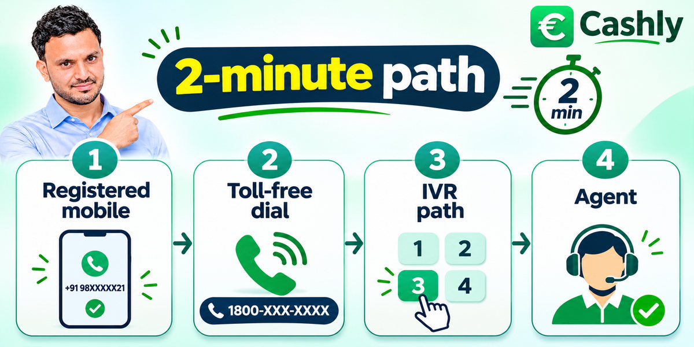

Credit cards · SBI
SBI Credit Card Customer Care — 2 मिनट में कैसे जुड़ें
SBI Credit Card Customer Care — how to connect in about 2 minutes

Cashly • Cover
SBI Card की हेल्पलाइन पर फँसना आम बात है — लंबा IVR, गलत option, और “please wait”. सही नंबर + registered mobile + साफ़ path से अक्सर बहुत जल्दी agent तक पहुँचा जा सकता है।
Getting stuck on SBI Card helpline is common — long IVR, wrong options, endless “please wait”. The right number, your registered mobile, and a clear path often get you to an agent much faster.
कौन से नंबर इस्तेमाल करें
Which numbers to use
1800 180 1290
Toll-free — पहले यही try करें (registered number से)
Toll-free — try this first (from registered number)
1860 500 1290 / 1860 180 1290
Chargeable lines — backup
Chargeable lines — backup
STD + 39020202
Local STD code लगाकर (जैसे दिल्ली 011-39020202)
Prefix your local STD code
ज़रूरी: जिस मोबाइल पर कार्ड registered है, उसी से कॉल करें — verification तेज़ होती है। कार्ड के last 4 digits और हाल की transaction हाथ में रखें।
Must: Call from the mobile registered on the card — verification is faster. Keep last 4 digits and a recent transaction ready.
तेज़ जुड़ने का simple flow
A simple flow to connect faster
- Registered mobile से toll-free डायल करें।
- Dial toll-free from your registered mobile.
- IVR में credit card / existing customer चुनें (prompt सुनकर)।
- In IVR choose credit card / existing customer (follow prompts).
- Card number / last 4 digits जब माँगे तब दें।
- Enter card number / last 4 digits when asked.
- Agent option पर जाएँ — billing, block, dispute के लिए अलग path हो सकता है।
- Move to agent option — billing, block, or dispute may have separate paths.

Cashly • Steps
कॉल से पहले / अलावा
Before you call / other options
- App / net banking: limit, statement, block अक्सर यहीं हो जाता है।
- App / net banking: limits, statements, block often work here first.
- SMS (registered): जैसे BAL + last 4 digits → 5676791 (services change कर सकती हैं)।
- SMS (registered): e.g. BAL + last 4 digits → 5676791 (codes can change).
- Lost card: तुरंत app/IVR से block — बाद में dispute।
- Lost card: block via app/IVR first — dispute later.
वीडियो में पूरी demo
Full walkthrough on video
शिक्षा हेतु। नंबर और IVR menu समय के साथ बदल सकते हैं — आधिकारिक SBI Card site/app चेक करें। Cashly SBI Card से affiliated नहीं।
Educational only. Numbers and IVR menus can change — verify on official SBI Card channels. Cashly is not affiliated with SBI Card.